Each sheet: top row before (0.2.201), bottom row after. Columns: the stop's own camera, a mid view of the cut, a close-up of a floor, a close-up of a wall; each in EEVEE and Cycles (24 samples, denoised), 480 × 270 px (the picture size the marks' level of detail is set for). Learning-hub sets, invented test models only; Mark size as each set has it (1, stop 60: 7). Views a set has no such face for are grey.
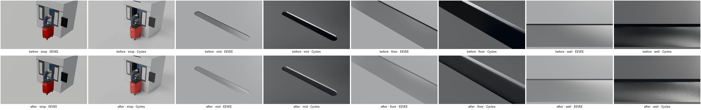
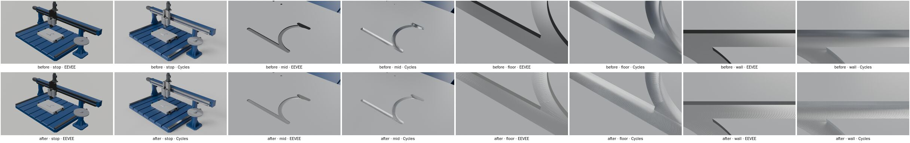
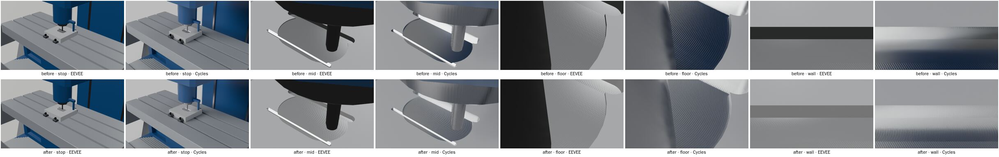
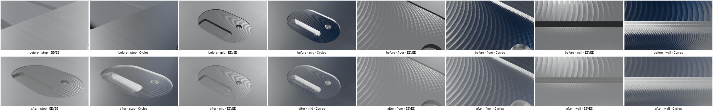
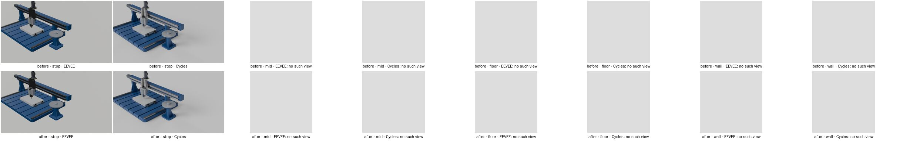
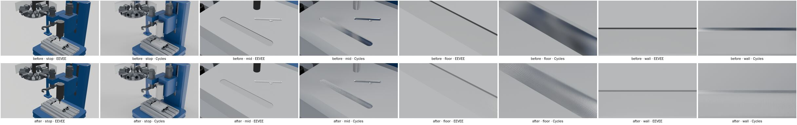
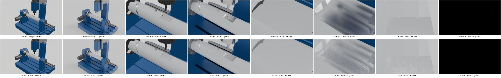
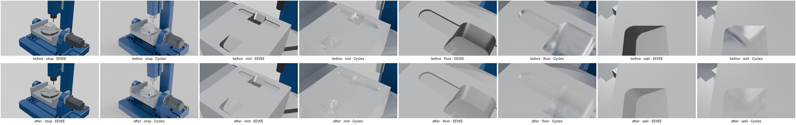
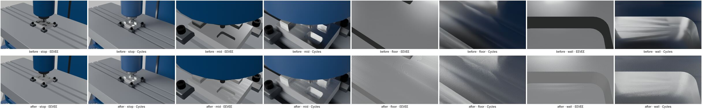
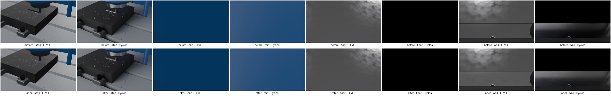
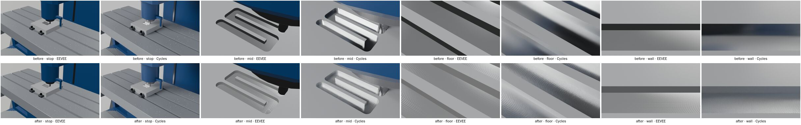
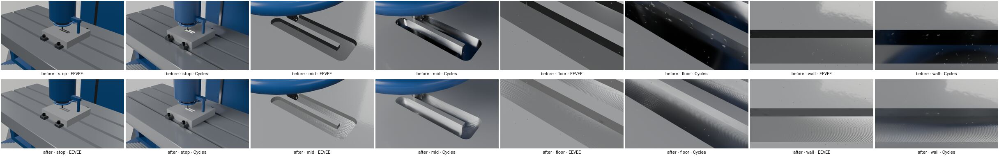